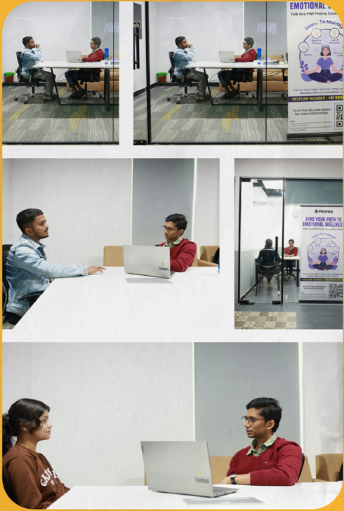
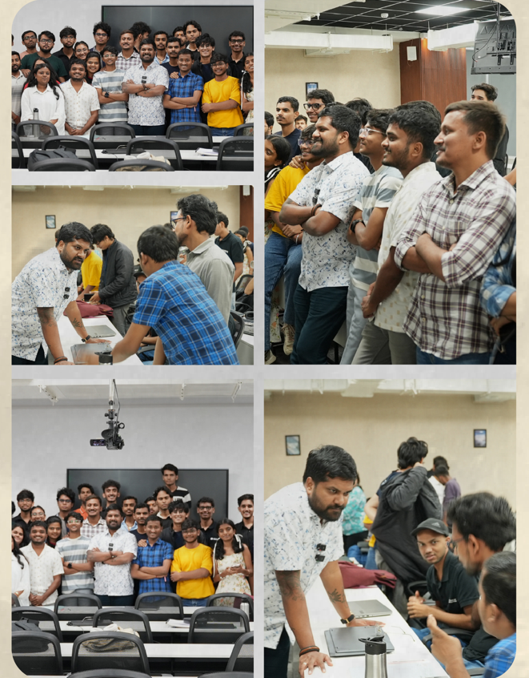
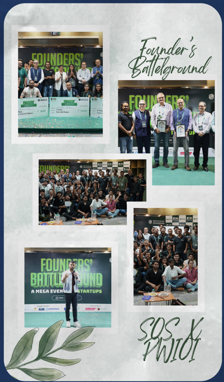

.jpg)
Prerna Session: Supporting Students Through Emotional Well-being

A meaningful session was recently held on the IOI campus in collaboration with the PW Prerna team, centred on promoting emotional well-being among students. Key topics included stress management, strategies for coping with exam-related anxiety, and recognizing the difference between healthy and unhealthy emotional responses.
The PW Prerna initiative emphasizes the importance of understanding students’ individual strengths and supporting their growth with confidence, even in the face of challenges.
Student participation was strong, with many choosing to stay afterwards for one-on-one guidance, underscoring the value of such efforts in nurturing a more resilient and emotionally aware student community.
A meaningful session was recently held on the IOI campus in collaboration with the PW Prerna team, centred on promoting emotional well-being among students. Key topics included stress management, strategies for coping with exam-related anxiety, and recognizing the difference between healthy and unhealthy emotional responses.
The PW Prerna initiative emphasizes the importance of understanding students’ individual strengths and supporting their growth with confidence, even in the face of challenges.
Student participation was strong, with many choosing to stay afterwards for one-on-one guidance, underscoring the value of such efforts in nurturing a more resilient and emotionally aware student community.
Workshop on Personal Branding

A session on Personal Branding was conducted with Mr. Lalith Dhanush, Centre Head at Lit School. It highlighted strategies for effectively using social media to build and enhance a personal brand.
Mr. Lalith provided actionable insights on creating a compelling online presence and aligning digital profiles with long-term professional objectives.
A session on Personal Branding was conducted with Mr. Lalith Dhanush, Centre Head at Lit School. It highlighted strategies for effectively using social media to build and enhance a personal brand.
Mr. Lalith provided actionable insights on creating a compelling online presence and aligning digital profiles with long-term professional objectives.
SOS Founders’ Battleground

The School of Startups (SOS) recently brought a surge of entrepreneurial energy to the Bengaluru PW IOI campus with Mega Battleground, a high-energy event celebrating innovation and startup ambition.
Among the top performers was KV Chai, a student-led startup that earned third place. Their product—a 100% natural, acidity-free tea premix—targets health concerns related to traditional chemical-laden teas.
KV Chai aims to become India's most trusted healthy tea brand.
The School of Startups (SOS) recently brought a surge of entrepreneurial energy to the Bengaluru PW IOI campus with Mega Battleground, a high-energy event celebrating innovation and startup ambition.
Among the top performers was KV Chai, a student-led startup that earned third place. Their product—a 100% natural, acidity-free tea premix—targets health concerns related to traditional chemical-laden teas.
KV Chai aims to become India's most trusted healthy tea brand.
Open Source 101: A Beginner’s Guide Launch

A workshop was held on 28th May with Mr. Sanket Singh (SDE II at Microsoft, Ex-Google & LinkedIn). Students learned about open-source development, career strategies, and tech industry experiences.
Mr. Singh’s talk sparked lively participation, showcasing student enthusiasm and curiosity.
A workshop was held on 28th May with Mr. Sanket Singh (SDE II at Microsoft, Ex-Google & LinkedIn). Students learned about open-source development, career strategies, and tech industry experiences.
Mr. Singh’s talk sparked lively participation, showcasing student enthusiasm and curiosity.
Microsoft Campus Visit
An exclusive Microsoft Campus Visit was held on 30th May for School of Technology students. The visit offered insights into Microsoft's work culture, innovation, and collaboration.
Students gained valuable exposure to real-world operations and returned with broadened perspectives and motivation.
Tech Sangam 2025
Tech-Sangam 2025 was a 48-hour innovation challenge hosted by Physics Wallah. It brought together tech, product, design, and business students to tackle real-world problems.
PW IOI teams showcased exceptional creativity and commitment, pushing forward impactful solutions.